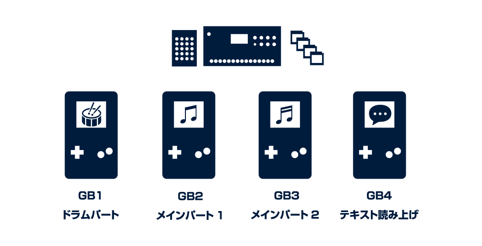
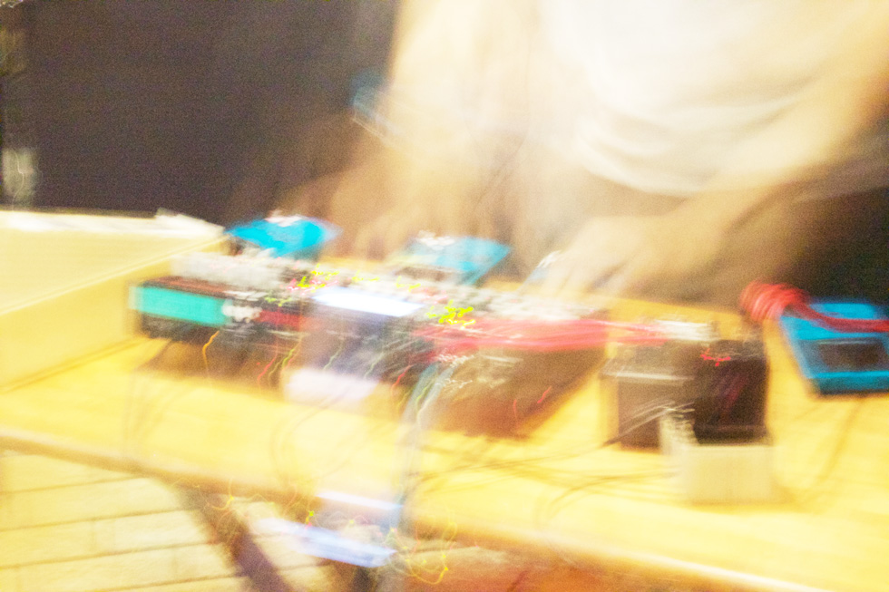
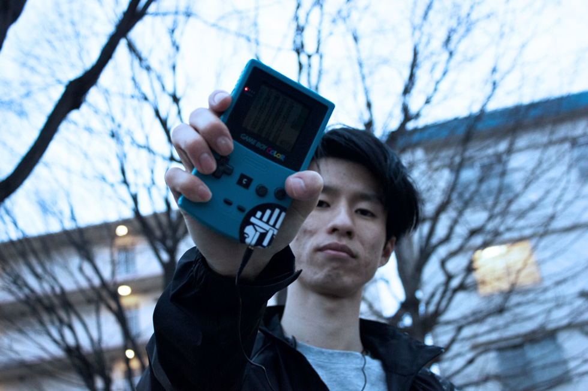

ureyu （うれゆ）
2007年からゲームボーイで曲を作り始め、2011年よりライブ活動を開始。以降、毎月開催の「technique」へ出演を続け、ゲームボーイ4台とOctatrackを中心にしたライブセットの手直しに努める。2014年にTokyo Electro Beat Parkより初EPをリリース。木製のCDケースを自作するなどDIY力も高い。
GB4台を使った、目まぐるしく色を変えるライブが魅力のアーティスト「ureyu」
今回はESC TRAXでリリースしていただいたureyuさんにロングインタビューをお願いしました。 いつものインタビューよりももっとじっくり濃い内容でお届けいたします!
幼少期はピアノも馴染めず、中学の頃くらいまで音楽番組なども見ない生活でした
ーーureyuさんは自身のライブ活動だけではなく、DJをされたりイベントをオーガナイズされることもありますが、昔から音楽大好き少年だったんでしょうか？
幼少期からピアノは習っていましたがあまり馴染めず、中学の頃くらいまではそれほど音楽番組なども見ない生活を送っていましたね。
徐々に音楽に興味を持つようになったのは高校くらいからで、SPACE SHOWER TV等から情報を得てMumやLemon Jelly等、エレクトロニカバンド寄りなアーティスト中心に聞くようになりました。
また、この頃くらいから19頭身をよくチェックしていましたね、SHEXあたりをよく聞いていました。
この頃くらいから徐々に作曲に興味を持つようになっていったと思います。
きっかけはジャニスで借りたnonoloopのコンピ
ーーその後、どのようなきっかけでチップチューンを始めるに至ったんでしょうか？
大学時代にDJサークルに入ってから更に音楽にどっぷり浸かっていくようになりました。
Fourth Floorに入り浸っている人と出会ったり、御茶ノ水のレンタルCD店 ジャニスの店員さんと仲良くなって色々聞くようになったり。
そんな中、ジャニスで借りたnanoloopコンピやcow’pを聞いたのがきっかけでチップチューンに興味を持ちました。
なので最初はnanoloopを購入して作曲をはじめたんですよ。
……でも、目指している音と何か違う気がして色々調べていくうちに、LSDjに出会って現在のような作曲スタイルになっていきました。
今回の作品は4台のGBにそれぞれ役割を振って構成しています
ーーureyuさんのライブは一般的なチップチューンアーティストのライブとは違い、複数のGBを同時に鳴らしているように見えるのですが、どういった構成なんでしょうか？
例えば、今回の作品ですと4台のGBにそれぞれ役割を振っています。
基本的にはDJミックスのようなやり方でGB2で流す曲とGB3で流す曲を交互に繋いでいます。
そこにドラムの音のみを使ったGB1で音を足している形です。
GB4はテキストを読み上げパートが必要な曲や、GBカートリッジ2枚使った曲などで使用しています。
大量に用意しているGBカートリッジ には1枚に1曲づつ仕込んでいます。
ーー途中でエフェクトをかけたりしているのはどうやられているんでしょうか？
4台のGB出力は4つのヘッドホンアンプを経由してOctatrackに入力されており、octatrackはミキサー兼エフェクターとして使用しています。 faderfoxのMIDIコントローラーでoctatrackのエフェクトパラメータを操作していて、内容はEQ・リバーブ・フィルターが主ですね。 横フェーダーはトラックの切り替え、octatrackのボタンはフリーズディレイで使用しています。
octatrackはLFOがついているのでフィルターにLFOをかけたり、各入力にそれぞれエフェクトをかかられたりと自由度が高くて重宝しています。 以前は4chのDJミキサーを使ってライブを行っていたのですが、ライブ中にかけられるエフェクトが少ないため機材変更して今の構成に至っています。
ライブではどこかに不確定要素を存在させています
ーー結構大掛かりな構成でやっているんですね、ライブでのこだわっているところとかがあれば教えてください。
ライブではどこかに不確定要素が存在する構成を心掛けています。 例えば、LSDjのWaveチャンネルとPulseチャンネルで同時にキックを鳴らすと、少しうなりが出るんですが、毎回同じようなうなりが起こるとは限らないんです。 完全に自分が音をコントロールするのではなく、こういった不確定要素がリアルタイムに起こるところに面白味を感じますね。
また、GBはケーブルを繋げばテンポの同期ができるんですが、実は手動のポン出しでテンポ合わせをしているんですよ。 手動だとライブセットをかっちり決めておく必要がなくなるし、乗りこなしてる感が出て気持ちの高まりも得られますしね。
今回の作品は現時点のGBライブの集大成といえる作品
ーー今回リリースになりましたCross Creaksですが、こちら通常のセパレートした音楽としてではなく、1本のつながったライブ形式のリリースとなりますが、今回の作品について詳しくお聞かせいただけますでしょうか。
現時点のGBライブの集大成といえる作品です。
BPM120での作曲にハマっていた時期に作った楽曲が多いのですが、BPM160を超えるような速い曲も混ぜたいと思いだんだん加速するような構成になっています。 BPM120のパートは暗いイメージが中心ですが、BPM160以上のパートは舞い上がった埃の塊に殴られるようなイメージで作りました。
普段の曲作りの時からライブでの使用を考えており、既存の曲もライブ仕様に変更してセットに組み込んでいます。 例えば曲名がuntitledのものはライブの仕込みで作ったもので、一曲として完成していないものですね。
今回のリリースでは、タイトルにあるように曲と曲の交わりや音と音の重なりが生む「グルーヴの軋み」に思いを馳せながら作りました。 chiptuneに限らず、打ち込み音楽では命令したことしか機材は鳴らしてくれないので、ライブセットを組む上でそのもどかしさを感じないためにどんなやり方があるのかを常に気にかけています。
今後のライブセットも、少しずつ変化を加えていくつもりです。
ーーありがとうございます。ureyuさんのライブの魅力がたっぷり詰まった音源だと思います。今後やりたいことや展望等はありますでしょうか。
そうですね…… LSDjの808kitや909kitを利用していくうちに実機特有の音に興味を持つようになってきたので、今後はGB以外にも手持ちの機材の特性を引き出せるような制作を続けてみようと思っています。
ーーureyuさんの実機演奏の楽曲もこれから楽しみです。今回はありがとうございました！
【ureyu - discography】 ・ureyu - arakawa ・Japanese Juke&Fwk2 ・Underdrain Remixes ・ureyu - Final Subcontract ・GORGE FES 2014 -stage1- ・Chip Juke Bros ・NURUMAYU Presents Ahoji The Remixes : Compiled by dubstronica ・15 Years In Breakin’ Beatz ! ! !
編集・テキスト：ESC TRAX／撮影：Terminal Connect／翻訳協力：赤帯